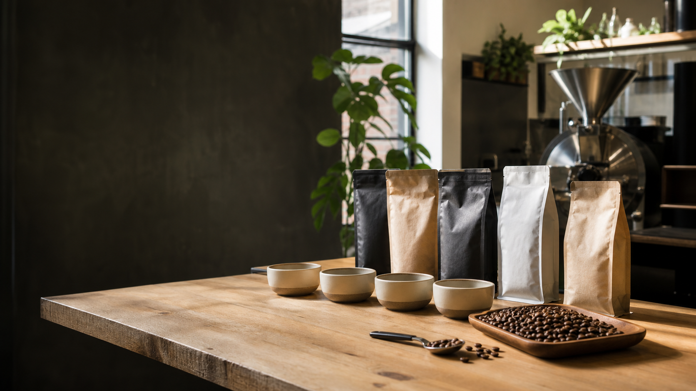

Flavor first
Selected notes carry the most weight, with close families such as citrus and tropical counted as light signals.

US Third-Wave Coffee Finder
Choose the tasting notes, brewing style, and roast level you want. The matcher ranks coffees from independent specialty roasters around the country.
Flavor profile
Use the original CoffeeSubscription flavor wheel, tune the brew, and open the exact coffee product page when a match looks right.
Coffee flavor wheel
Click inner-ring categories or outer-ring flavors to shape the recommendation.
No flavors selected yet.
Click a selected wheel segment or note below to remove it.
Coverage
A starter US third-wave catalog with exact, roaster-owned product links. Availability is tracked so unavailable coffees can be removed from the ranking.
Recommendation logic
Selected notes carry the most weight, with close families such as citrus and tropical counted as light signals.
Drip coffees, espresso blends, filter coffees, milk-friendly profiles, and cold brew picks are scored against the brew control.
Recommendations point to official roaster shops because exact seasonal lots rotate quickly across specialty coffee.